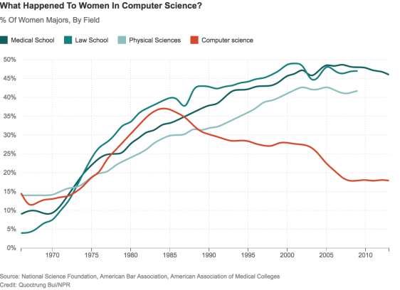

Les Femmes sont très peu représenter dans le domaine de L'informatique et du Web
Alors qu’en 1978, 50 % des étudiant·es en informatique étaient des femmes, à la fin des années 2010 elles oscillent entre 10 et 15 %. En 2019, au sortir de leur diplôme, seules 25 % d’entre elles occupent des fonctions techniques, les autres rejoignant certes des entreprises du numérique, pour y occuper des fonctions dites « de support » : ressources humaines, documentation, marketing et communication. Au total, 27,4 % des salarié·es du secteur informatique sont des femmes. En fait, ingénieur informatique est un des métiers les plus ségrégés en termes de genre en France, avec les ouvriers et techniciens du BTP, l’Armée/la Police/les pompiers et les conducteurs de véhicule.
(ritimo.fr)

Voila un graphiique qui montre la présence des femmes dans les formation d'informatiques des 10 plus grandes écoles d'informatique en France.
On constate clairement que de nos jours les femmes ne sont plus intéresser ou ne désirent plus cette formation qui pourtant à la base était une formation choisis par de nombreuse femmes.